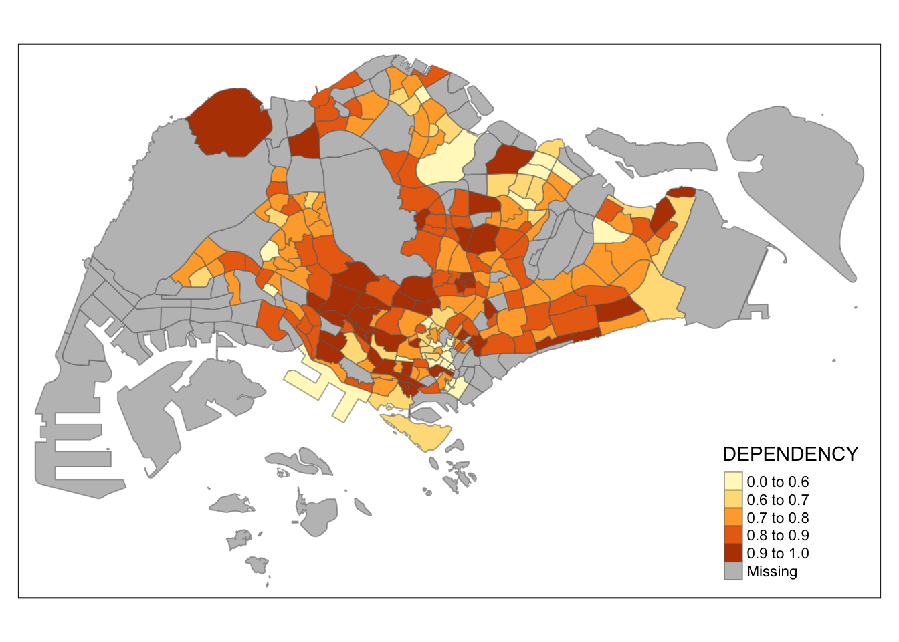
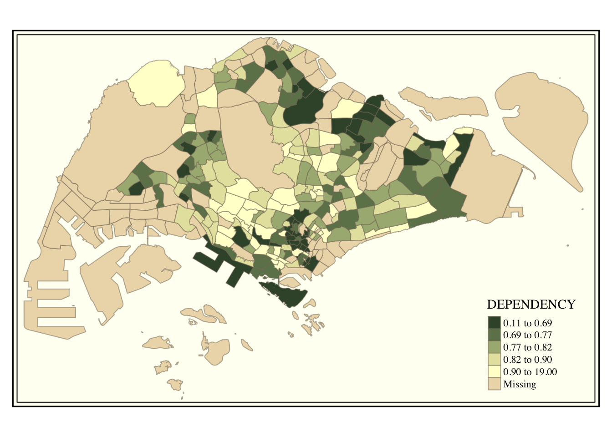
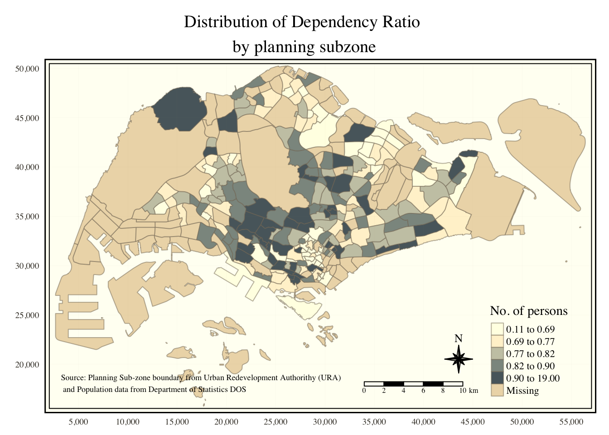

Show code
pacman::p_load(tmap, tidyverse, sf)Summary of learning
The R packages that I will be using today are tmap, readr, tidyr, dplyr and sf.
pacman::p_load(tmap, tidyverse, sf)The data that we will be using to create the choropleth map are:
Note: Although it does not contain any coordinates values, but it’s PA and SZ fields can be used as unique identifiers to geocode to MP14_SUBZONE_WEB_PL shapefile.
Using st_read() function of sf package to import MP14_SUBZONE_WEB_PL shapefile into R.
mpsz <- st_read(dsn = "data/geospatial",
layer = "MP14_SUBZONE_WEB_PL")Reading layer `MP14_SUBZONE_WEB_PL' from data source
`/Users/jacksontan/Documents/Sashimii0219/IS415-GAA/Hands-on_Ex/Hands-on_Ex02/data/geospatial'
using driver `ESRI Shapefile'
Simple feature collection with 323 features and 15 fields
Geometry type: MULTIPOLYGON
Dimension: XY
Bounding box: xmin: 2667.538 ymin: 15748.72 xmax: 56396.44 ymax: 50256.33
Projected CRS: SVY21Importing respopagesextod2011to2020.csv using read_csv() function of readr package into R.
popdata <- read_csv("data/aspatial/respopagesextod2011to2020.csv")popdata# A tibble: 984,656 × 7
PA SZ AG Sex TOD Pop Time
<chr> <chr> <chr> <chr> <chr> <dbl> <dbl>
1 Ang Mo Kio Ang Mo Kio Town Centre 0_to_4 Males HDB 1- and 2-Ro… 0 2011
2 Ang Mo Kio Ang Mo Kio Town Centre 0_to_4 Males HDB 3-Room Flats 10 2011
3 Ang Mo Kio Ang Mo Kio Town Centre 0_to_4 Males HDB 4-Room Flats 30 2011
4 Ang Mo Kio Ang Mo Kio Town Centre 0_to_4 Males HDB 5-Room and … 50 2011
5 Ang Mo Kio Ang Mo Kio Town Centre 0_to_4 Males HUDC Flats (exc… 0 2011
6 Ang Mo Kio Ang Mo Kio Town Centre 0_to_4 Males Landed Properti… 0 2011
7 Ang Mo Kio Ang Mo Kio Town Centre 0_to_4 Males Condominiums an… 40 2011
8 Ang Mo Kio Ang Mo Kio Town Centre 0_to_4 Males Others 0 2011
9 Ang Mo Kio Ang Mo Kio Town Centre 0_to_4 Females HDB 1- and 2-Ro… 0 2011
10 Ang Mo Kio Ang Mo Kio Town Centre 0_to_4 Females HDB 3-Room Flats 10 2011
# ℹ 984,646 more rowsWe will be preparing a data table with year 2020 values that includes the following variables:
Using the following functions: - pivot_wider() of tidyr package, and - mutate(), filter(), group_by() and select() of dplyr package
popdata2020 <- popdata %>%
filter(Time == 2020) %>% # Only select year 2020 values
group_by(PA, SZ, AG) %>% # Group data by the following variables
summarise(`POP` = sum(`Pop`)) %>% # Group Pop value by summing them
ungroup()%>%
pivot_wider(names_from=AG,
values_from=POP) %>% # Splitting the values in column AG into their own column, with the value from POP
mutate(YOUNG = rowSums(.[3:6])
+rowSums(.[12])) %>%
mutate(`ECONOMY ACTIVE` = rowSums(.[7:11])+
rowSums(.[13:15]))%>%
mutate(`AGED`=rowSums(.[16:21])) %>%
mutate(`TOTAL`=rowSums(.[3:21])) %>%
mutate(`DEPENDENCY` = (`YOUNG` + `AGED`) # Calculate %
/`ECONOMY ACTIVE`) %>%
select(`PA`, `SZ`, `YOUNG`,
`ECONOMY ACTIVE`, `AGED`,
`TOTAL`, `DEPENDENCY`)popdata2020# A tibble: 332 × 7
PA SZ YOUNG `ECONOMY ACTIVE` AGED TOTAL DEPENDENCY
<chr> <chr> <dbl> <dbl> <dbl> <dbl> <dbl>
1 Ang Mo Kio Ang Mo Kio Town Cen… 1440 2610 760 4810 0.843
2 Ang Mo Kio Cheng San 6640 15460 6050 28150 0.821
3 Ang Mo Kio Chong Boon 6150 13950 6470 26570 0.905
4 Ang Mo Kio Kebun Bahru 5540 12090 5120 22750 0.882
5 Ang Mo Kio Sembawang Hills 2100 3410 1310 6820 1
6 Ang Mo Kio Shangri-La 3960 8420 3610 15990 0.899
7 Ang Mo Kio Tagore 2220 4200 1530 7950 0.893
8 Ang Mo Kio Townsville 4690 11450 5100 21240 0.855
9 Ang Mo Kio Yio Chu Kang 0 0 0 0 NaN
10 Ang Mo Kio Yio Chu Kang East 1220 2300 750 4270 0.857
# ℹ 322 more rowsThe values in the PA and SZ fields consist of both upper and lowercase values. We will standardize them all by converting them all to uppercase.
popdata2020 <- popdata2020 %>%
mutate_at(.vars = vars(PA, SZ),
.funs = list(toupper)) %>%
filter(`ECONOMY ACTIVE` > 0) # Filter out areas with no "ECONOMY ACTIVE"Using the left_join() of dplyr, we join the geographical data and the attribute table using planning subzone name (SUBZONE_N of mpsz is = SZ of popdata2020).
mpsz_pop2020 <- left_join(mpsz, popdata2020,
by = c("SUBZONE_N" = "SZ"))write_rds(mpsz_pop2020, "data/rds/mpszpop2020.rds")Easiest and quickest to draw a choropleth map using tmap is using qtm().
tmap_mode("plot") creates a static map, whereas “view” creates an interactive map.
fill argument is used to map the attribute.
tmap_mode("plot")
qtm(mpsz_pop2020,
fill = "DEPENDENCY")
Disadvantage of qtm() is that it makes aesthetics of individual layers harder to control. To draw a high quality cartographic choropleth map, tmap’s drawing elements should be used.
tm_shape(mpsz_pop2020)+
tm_fill("DEPENDENCY",
style = "quantile",
palette = "Blues",
title = "Dependency ratio") +
tm_layout(main.title = "Distribution of Dependency Ratio by planning subzone",
main.title.position = "center",
main.title.size = 1.2,
legend.height = 0.45,
legend.width = 0.35,
frame = TRUE) +
tm_borders(alpha = 0.5) +
tm_compass(type="8star", size = 2) +
tm_scale_bar() +
tm_grid(alpha =0.2) +
tm_credits("Source: Planning Sub-zone boundary from Urban Redevelopment Authorithy (URA)\n and Population data from Department of Statistics DOS",
position = c("left", "bottom"))
The map above consist of the following elements:
The basic building block of tmap is tm_shape() followed by one or more layer elemments such as tm_fill() and tm_polygons().
In the code chunk below, tm_shape() is used to define the input data (i.e mpsz_pop2020) and tm_polygons() is used to draw the planning subzone polygons.
To draw a choropleth map showing the geographical distribution of a selected variable by planning subzone, we just need to assign the target variable such as Dependency to tm_polygons().
tm_shape(mpsz_pop2020) +
tm_polygons("DEPENDENCY")
Note:
Default interval binning used - “pretty”
Default colour scheme - “YlOrRd”
Default Missing value colour - Grey
tm_polygons() can be further broken down into:
tm_fill() - shades the polygon.
tm_borders() - adds the borders of the shapefile onto the choropleth map.
tm_shape(mpsz_pop2020)+
tm_fill("DEPENDENCY") +
tm_borders(lwd = 0.1, alpha = 1)
4 arguments for tm_borders():
alpha = transparency number between 0 and 1,
col = border colour,
lwd = border line width. The default is 1, and
lty = border line type. The default is “solid”.
Most choropleth maps employ some methods of data classification.
tmap provides a total ten data classification methods, namely: fixed, sd, equal, pretty (default), quantile, kmeans, hclust, bclust, fisher, and jenks.
To define data classfication method, we will be using the style argument of of tm_fill() or tm_polygons().
The code chunk below shows a quantile data classification that used 5 classes.
tm_shape(mpsz_pop2020)+
tm_fill("DEPENDENCY",
n = 5,
style = "quantile") +
tm_borders(alpha = 0.5)
For all the built-in styles, the category breaks are computed internally. This can be overriden using the breaks argument of the tm_fill() function. In order to end up with n categories, n+1 elements must be specified in the breaks option (the values must be in increasing order).
It is a good practice to get some descriptive statistics on the variable before setting the break points.
summary(mpsz_pop2020$DEPENDENCY) Min. 1st Qu. Median Mean 3rd Qu. Max. NA's
0.1111 0.7147 0.7866 0.8585 0.8763 19.0000 92 With reference to the results above, we set break point at 0.60, 0.70, 0.80, and 0.90. In addition, we also need to include a minimum and maximum, which we set at 0 and 100. Our breaks vector is thus c(0, 0.60, 0.70, 0.80, 0.90, 1.00).
Plotting the map using the breakpoints:
tm_shape(mpsz_pop2020)+
tm_fill("DEPENDENCY",
breaks = c(0, 0.60, 0.70, 0.80, 0.90, 1.00)) +
tm_borders(alpha = 0.5)
Assigning a colour to palette argument of tm_fill() changes the colour.
tm_shape(mpsz_pop2020)+
tm_fill("DEPENDENCY",
n = 6,
style = "quantile",
palette = "Blues") +
tm_borders(alpha = 0.5)
To reverse the colour shading, add a “-” prefix.
tm_shape(mpsz_pop2020)+
tm_fill("DEPENDENCY",
n = 6,
style = "quantile",
palette = "-Blues") +
tm_borders(alpha = 0.5)
Refers to the combination of all map elements into a cohesive map, e.g. the title, the scale bar, the compass, margins and aspects ratios.
In tmap, several legend options are provided to change the placement, format and appearance of the legend.
tm_shape(mpsz_pop2020)+
tm_fill("DEPENDENCY",
style = "jenks",
palette = "Blues",
legend.hist = TRUE,
legend.is.portrait = TRUE,
legend.hist.z = 0.1) +
tm_layout(main.title = "Distribution of Dependency Ratio by planning subzone \n(Jenks classification)",
main.title.position = "center",
main.title.size = 1,
legend.height = 0.45,
legend.width = 0.35,
legend.outside = FALSE,
legend.position = c("right", "bottom"),
frame = FALSE) +
tm_borders(alpha = 0.5)
Refers to the layout settings.
tm_shape(mpsz_pop2020)+
tm_fill("DEPENDENCY",
style = "quantile",
palette = "-Greens") +
tm_borders(alpha = 0.5) +
tmap_style("classic")
Refers to map furniture like compass, scale bar and grid lines.
tm_shape(mpsz_pop2020)+
tm_fill("DEPENDENCY",
style = "quantile",
palette = "Blues",
title = "No. of persons") +
tm_layout(main.title = "Distribution of Dependency Ratio \nby planning subzone",
main.title.position = "center",
main.title.size = 1.2,
legend.height = 0.45,
legend.width = 0.35,
frame = TRUE) +
tm_borders(alpha = 0.5) +
tm_compass(type="8star", size = 2) + # Compass
tm_scale_bar(width = 0.15) + # Scale Bar
tm_grid(lwd = 0.1, alpha = 0.2) + # Grid line
tm_credits("Source: Planning Sub-zone boundary from Urban Redevelopment Authorithy (URA)\n and Population data from Department of Statistics DOS",
position = c("left", "bottom"))
To reset to default style, use tmap_style(“white”).
Small multiple maps / facet maps are composed of many maps arrange side-by-side / stacked vertically. It is used to visualise how spatial relationships change with respect to another variable, such as time. This can be done using tmap in 3 ways:
Small multiple choropleth maps are created by defining ncols in tm_fill(), in this case c(“YOUNG”, “AGED”).
tm_shape(mpsz_pop2020)+
tm_fill(c("YOUNG", "AGED"),
style = "equal",
palette = "Blues") +
tm_layout(legend.position = c("right", "bottom")) +
tm_borders(alpha = 0.5) +
tmap_style("white")
Small multiple choropleth maps can also be created by assigning multiple values to at least one of the aesthetic arguments.
tm_shape(mpsz_pop2020)+
tm_polygons(c("DEPENDENCY","AGED"),
style = c("equal", "quantile"),
palette = list("Blues","Greens")) +
tm_layout(legend.position = c("right", "bottom"))
tm_shape(mpsz_pop2020) +
tm_fill("DEPENDENCY",
style = "quantile",
palette = "Blues",
thres.poly = 0) +
tm_facets(by="REGION_N", # here
free.coords=TRUE,
drop.shapes=TRUE) +
tm_layout(legend.show = FALSE,
title.position = c("center", "center"),
title.size = 20) +
tm_borders(alpha = 0.5)
youngmap <- tm_shape(mpsz_pop2020)+
tm_polygons("YOUNG",
style = "quantile",
palette = "Blues")
agedmap <- tm_shape(mpsz_pop2020)+
tm_polygons("AGED",
style = "quantile",
palette = "Blues")
tmap_arrange(youngmap, agedmap, asp=1, ncol=2) # here
Instead of creating small multiple choropleth map, you can also use selection function to map spatial objects meeting the selection criterion.
tm_shape(mpsz_pop2020[mpsz_pop2020$REGION_N=="CENTRAL REGION", ])+
tm_fill("DEPENDENCY",
style = "quantile",
palette = "Blues",
legend.hist = TRUE,
legend.is.portrait = TRUE,
legend.hist.z = 0.1) +
tm_layout(legend.outside = TRUE,
legend.height = 0.45,
legend.width = 5.0,
legend.position = c("right", "bottom"),
frame = FALSE) +
tm_borders(alpha = 0.5)